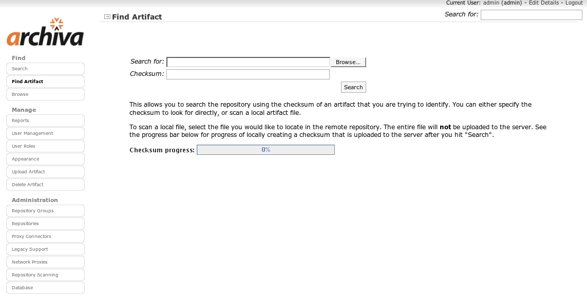

Identifying an Artifact
Archiva indexes all of the artifacts that it discovers during the repository scanning process, storing information about their contents. This includes the checksum of the artifact, which can help to uniquely identify it within the repository.
Archiva includes a feature that allows you to check for the existence of a given artifact in the repository by checksum. This is useful in identifying a JAR or other artifact located from an external source that does not contain any Maven or version information.
To use this functionality, click the "Find Artifact" link in the left navigation.
When the screen first loads, a Java applet that will allow you to create a local checksum of a given artifact is loaded. Since it is reading the content of the artifact from the filesystem, it will present a security dialog similar to the following:

By trusting the applet, you can checksum files of any size locally and just upload the small checksum to the server. If you opt not to trust the applet, you must enter the checksum into the web form by hand.
Once you have loaded the page, you have the choice of browsing for a local file to identify, or entering the checksum directly.
To find an artifact, perform the following steps:
- Click Find Artifact in the left navigation menu.
- On the opened page, you will see a file-upload field. Upload any JAR file (or other artifact) from your local file system. You must enter an exact filename. In general, you would use the Browse button for entering the filename.
- Click Search.
- The whole file is not uploaded, but the checksum is. It will search the remote repository for an exact match of the file you specified and display the result of the search.
Once you submit the form, Archiva will look to match the checksum:
- If more than one artifact matches, a list of results is returned.
- If a unique match is found, the individual artifact information page is returned.
- If no match is found, a "no results" page is returned.